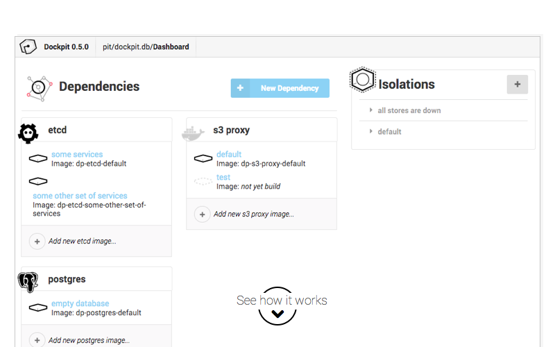

Because handling (micro)service dependencies during development is a pain.
Lets solve it in 5 minutes(Free and open-source)

Because handling (micro)service dependencies during development is a pain.
Lets solve it in 5 minutes(Free and open-source)

Dockpit makes it trivial to develop your (micro)service in isolation. It mocks the APIs you depend on and puts data stores, message queus and service registries in predictable states
Templates for the technologies you already know
Quickly setup commonly used technologies with build-in templates that let you configure them right away. Is your favorite technology not yet included? You can always setup anything you want by writing your own Dockerfiles.
Dockerfile editor with immediate feedback
The state of dependencies are configured using Dockerfiles. Dockpit comes with an editor that allows you to build and test the resulting image immediately for quick feedback.
Different Isolations for different Scenarios
Different tests might need different data in the database, or maybe do you want to see what happens if your service registry is down? You can configure multiple isolations with different states for each dependency to test any scenario you can imagine.
A Terminal UI for quickly switching between isolations
We know you feel comfortable in your Terminal. Dockpit comes with a Terminal UI that allows you to quickly switch between different isolations without ever lifting your hands off the keyboard.